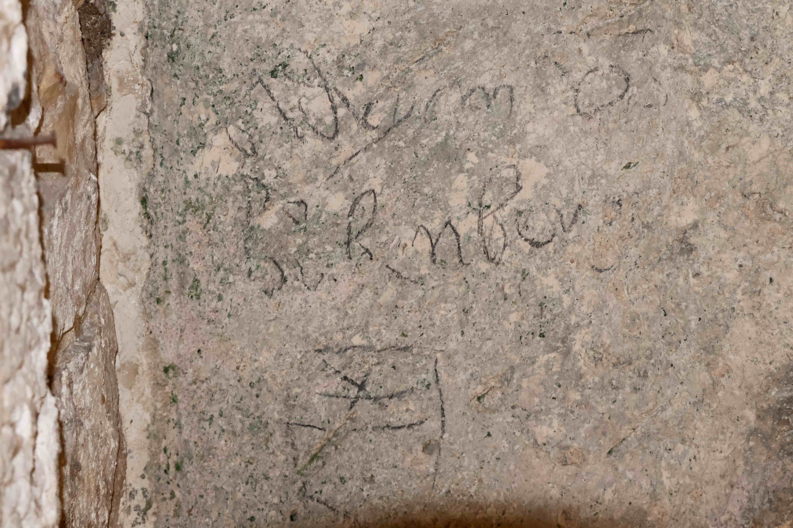
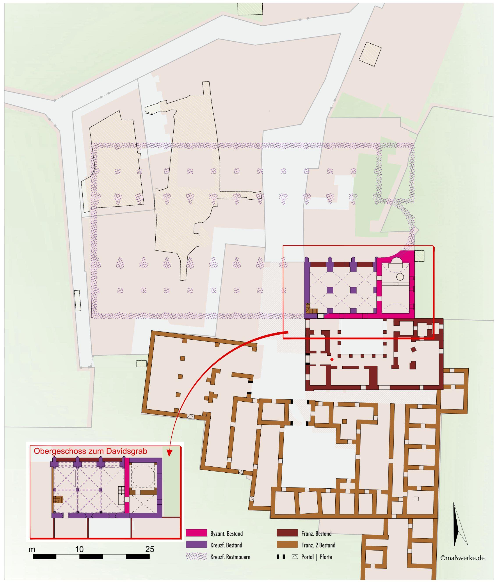

Das verwirrende Geschachtel an Gebäuden um den Abendmahlssaal. Der Saal selbst befindet sich unter der grossen Terrasse mit grauer Kuppel. Rechts davon in der Tiefe der ist der kleine Kreuzgang. Aufnahme vom Turm der Dormitio-Abtei aus. (Foto: Jürgen Krüger 2011)
Bisher wusste man eigentlich nichts über den Aufenthalt eines Adrian von
Bubenberg in Jerusalem, nichts ausser der schriftlichen Überlieferung,
dass die zwei Träger dieses Namens, Adrian I. (um 1434–1479) und Adrian
II. (1458–1506), eine Heiliglandreise unternehmen wollten, im Jahr 1466
der Vater oder im Jahr 1480 der Sohn. Aber bisher gab es keine Beweise
dafür, ein Pilgerbericht ist zum Beispiel nicht bekannt.
Entsprechend spektakulär war die Meldung im Herbst 2022, dass bei
Restaurierungsarbeiten im Baukomplex des Abendmahlssaal der Schriftzug
«Bubenberg» gefunden worden sei. An dieser Stelle soll versucht werden,
diesen Fund etwas einzuordnen.
Auch ich war hier! – Der Fund
Pilgerschaft hinterlässt Spuren, so war es schon immer. Zu Hause erinnern häufig ganz unterschiedliche Gegenstände an den Besuch eines Heiligtums, oft verbunden mit frommen Wünschen und Vorstellungen. Aber auch das Ziel erhält häufig ein Erinnerungszeichen, meist in Form eines Graffitos, eine in die Wand eingeritzte Inschrift. Fast jede und jeder will sich verewigen, wir sehen es heute noch an jedem Aussichtspunkt. Im Grunde war es überall und immer so, nur sind die historischen Gebäude in Europa meist zu stark restauriert, als dass die alten Graffiti noch zu sehen wären. Anders im Heiligen Land. Die Heiligen Stätten der Christenheit sind mit Graffiti aus vielen Jahrhunderten geradezu übersät, das bekannteste Beispiel ist die Grabeskirche in Jerusalem. Der Baukomplex mit dem Abendmahlssaal dagegen fristet ein Schattendasein. Hier hat die Israelische Antikenbehörde IAA (Israel Antiquities Authority) in den letzten Jahren das Mauerwerk restauriert. Dabei wurde in einem Gewölbe der Schriftzug eines Adrian von Bubenberg sichtbar, zusammen mit dem Familienwappen.
Schriftzug des Adrian von Bubenberg, darunter sein Wappen. (Bild: Johanna Wirth, 2023)
Der Abendmahlssaal als Rest eines wichtigen Marienheiligtums
Der Blick vom Turm der Dormitio-Abtei auf den Baukomplex des Abendmahlssaals inmitten seiner Anbauten ist verwirrend. Zur Interpretation hilft ein moderner Plan, der die archäologischen Schichten erläutert.
Historisch-archäologischer Plan des Zionsklosters, Zeitstufe 15. Jahrhundert. Südlich an den Abendmahlssaal schliessen der Kreuzgang des Franziskanerkonvents und westlich davon die Pilgerherberge an. Der rote Punkt im Kreuzgang bezeichnet die ungefähre Position des Namenszugs von Adrian von Bubenberg. (Planzeichnung: Ulrich Haarlammert, maßwerke, Münster 2024)
Beim Abendmahlssaal – oder lateinisch Coenaculum – handelt es
sich um den Rest einer der ältesten und wichtigsten Kirchen in
Jerusalem, die wahrscheinlich auf das späte vierte Jahrhundert
zurückgeht. Markant ist die Lage des Raumes im Obergeschoss; schon in
byzantinischer Zeit wurde dieser Ort mit den Berichten der Evangelien
(Mk 14,12–16; auch Apg 1,12–14) verbunden, dass Jesus in einem
Obergemach das letzte Abendmahl gefeiert habe. Im 5./6. Jahrhundert
stand jedenfalls auf dem Zionsberg eine grosse Basilika, in der diese
Episode und weitere Geschehnisse der Evangelien und der
Apostelgeschichte lokalisiert wurden. So wurden hier den Pilger:innen,
jeweils an unterschiedlichen Stätten innerhalb des Kirchengebäudes, die
Geisselsäule, die Dornenkrone Jesu und die Lanze gezeigt, mit der die
Seitenwunde Jesu geöffnet wurde. Hier wurde die Apostelversammlung nach
dem Tod Jesu, also zum Pfingstfest, verortet, ausserdem der Wohnort der
Maria. Des weiteren wurden die Steine gezeigt, mit denen Stephanus
gesteinigt worden war, also die Reliquien des ersten Märtyrers. Vor der
arabischen Eroberung Jerusalems im Jahr 638 konnte die Marienkirche auf
dem Zionsberg also mit Recht als «mater omnium ecclesiarum»
(Mutter aller Kirchen) bezeichnet werden, hier wurde die Kirche
gegründet.
Viel blieb von dieser ersten Kirche in der Folgezeit nicht übrig, so
dass sie mit Beginn der Kreuzritterzeit und der Errichtung des
lateinischen Königreichs Jerusalem (1099–1187) wiederaufgebaut und jetzt
von Augustinerchorherren betreut wurde. Die heutigen geringen Reste
gehen teilweise auf byzantinische und teilweise auf die Kreuzritterzeit
zurück, insbesondere der doppelstöckige Bau, der im Erdgeschoss gemäss
einer weiteren Tradition das Grab Davids enthielt und im Obergeschoss
eben den Abendmahlssaal.
Doch auch dieser Kirchenbau wurde nach 1187 zerstört, als die Zeit der
Kreuzritter zu Ende ging und die Stadt für viele Jahrhunderte unter
islamische Herrschaft kam. Jerusalem blieb nun ein schwer erreichbares
Sehnsuchtsziel der abendländischen Christ:innen. Erst Robert von Anjou
(1278–1343), dem frommen König von Neapel, gelang es, den westlichen
Pilger:innen wieder Zugang zu den Heiligen Stätten zu verschaffen, indem
er sich dafür einsetzte, dass die Franziskaner dauerhaft als Wächter des
Heiligen Grabes in Jerusalem bleiben konnten. Damit war die
Custodia Terrae Sanctae (Kustodie des Heiligen Landes:
Ordensorganisation der Franziskaner im Heiligen Land) geschaffen, bis
heute eine wichtige Einrichtung im Heiligen Land. Ihr Sitz wurde das
Coenaculum, der Abendmahlssaal. Ein bescheidener Konvent wurde im
Süden des Abendmahlssaals eingerichtet, und im Anschluss daran ein
Pilgerhospital.
Schwierigkeiten erwuchsen dem Konvent jedoch daraus, dass im Erdgeschoss
das Grab Davids verehrt wurde, der für alle abrahamitischen Religionen,
sprich Judentum, Christentum und Islam, wichtig ist. Im Jahr 1551
beanspruchten die Osmanen deswegen die Gebäude für sich und die
Franziskaner wurden vom Zionsberg vertrieben. Seitdem hat die
Custodie
ihren Sitz bei St. Salvator, nahe der Grabeskirche.
Für ungefähr zwei Jahrhunderte war für lateinische Pilger:innen der
Abendmahlssaal mit Konvent und Pilgerherberge der zentrale Punkt in
Jerusalem, und die Franziskaner wurden ihre zuverlässigen Betreuer. Die
Minderbrüder holten die Pilger:innen an der Küste ab, begleiteten sie
durchs Land, quartierten die Masse der Pilger:innen in verschiedenen
Unterkünften in der Stadt ein, während die von Rang in der Herberge auf
dem Zionsberg wohnen konnten. Anschliessend führten sie die
Besucher:innen durch die Heilige Stadt. Auf diese Weise wurde der
Zionsberg zum abendländischen Traditionsort, der mit keiner anderen
christlichen Konfession zu teilen war. In den besonders umfangreichen
Pilgerberichten des 15. Jahrhunderts finden sich immer wieder
Schilderungen dieses Franziskanerkonvents.
Adrian von Bubenbergs Spur
Seit der Zeit um 1900 wird der Baukomplex mit dem Abendmahlssaal
wissenschaftlich untersucht. Damals wurden auch schon die ersten
Graffiti und Wappendarstellungen im gotischen Kirchensaal und in dem
kleinen Kreuzgang entdeckt und dokumentiert. Doch erst bei den jüngsten
Restaurierungen wurde eine Vielzahl weiterer Spuren der Pilger:innen
aufgedeckt, und zu ihnen zählt eben Adrian von Bubenberg.
Wappen und Schriftzug wurden nicht im Kirchenraum selbst angebracht,
sondern im Kreuzgang, und zwar am Westende des Südflügels ungefähr im
Gewölbe, das sich schätzungsweise drei Meter über dem Fussboden
befindet. Die Freilegung erfolgte bereits im Jahr 2011/12.
Eine Besonderheit stellt dar, dass Wappen und Schriftzug mit Kohle
aufgetragen wurden, im Grunde also als Zeichnung. Der Berner
Historikerin Regula Schmid (*1965) ist es ferner gelungen, den
Schriftzug paläographisch mit Dokumenten der Bubenbergs in Schweizer
Archiven zu vergleichen; sie kommt zu dem Schluss, dass der Namenszug
nur Adrian I. zuzuordnen ist, mithin seiner Reise von 1466. Damit haben
wir die erste wichtige Erkenntnis, um welches Familienmitglied es sich
handelt, eben Adrian I., der von ca. 1439 bis 1479 lebte. Aber des
Weiteren können wir folgern, dass der Reisende selbst seinen Namen mit
einem Kohlestift geschrieben haben muss! Adrian muss auf eine Leiter
gestiegen sein, um in ca. drei Meter Höhe kopfüber seine Unterschrift an
die Decke zu bringen. Wie können wir uns das vorstellen?
Adrian von Bubenberg stand damals am Anfang seiner Karriere. Nach dem
Tod seines Vaters Heinrich IV. von Bubenberg wurde er 1465 Mitglied des
Kleinen Rats von Bern und muss dann sogleich seine Pilgerfahrt geplant
und durchgeführt haben. Er kehrte mit dem üblichen Ritterschlag am
Heiligen Grab zurück und wurde im weiteren Verlauf seines Lebens
mehrfach zum Schultheissen gewählt, mit anderen Worten: er war eine
schillernde und wichtige Persönlichkeit der Schweizer Geschichte des
späten Mittelalters. Es liegt nahe, ihn mit dem monumentalen
Jerusalem-Zeugnis in
Scherzligen am Thunersee
in Verbindung zu bringen, einem grossen Jerusalem-Panorama, das eine
ganze Kirchenwand einnimmt. Allein dafür fehlt der Beweis. Gesichert
ist, dass das Graffito von Adrian von Bubenberg den Abendmahlssaal in
Jerusalem zu einem theologisch bedeutsamen Ort für die Schweiz macht -
ein Ort, in dem das Schweizer Pilgerwesen mit dem Heiligen Land sichtbar
und erfahrbar wird.
Kreuzgang-Südflügel des Franziskanerklosters, Blick nach Westen. (Bild: Jürgen Krüger, 2011)
Jürgen Krüger führte Studien zum Abendmahlssaal durch, die von der Gerda Henkel Stiftung Düsseldorf unterstützt worden sind. In diesem Zusammenhang fertigte Ulrich Haarlammert, maßwerke, Münster, Pläne nach den Untersuchungsergebnissen an. Der Autor dankt der Stiftung für die Unterstützung, Ulrich Haarlammert für die überzeugende graphische Umsetzung der Ergebnisse sowie Johanna Wirth für die Anfertigung des aktuellen Fotos im Oktober 2023.
Weitere Artikel von {{ author.author }} finden Sie hier:
Zur Vertiefung:
- Chernin, Michael / Grigoryan, Samvel L. / Halevi, Shai: «Inscriptions and Heraldic Symbols from the Cenacle on Mount Zion», in: New Studies in the Archaeology of Jerusalem and its Region 15, 2022, 49–86 (hebr.; engl. in Vorbereitung)
- Heyden, Katharina / Lissek, Maria (Hgg.): Jerusalem am Thunersee. Das Scherzliger Passionspanorama neu gedeutet, Basel 2021.
- Küchler, Max: Jerusalem, ein Handbuch und Studienreiseführer zur Heiligen Stadt, Göttingen 2007, 613–631.
- Schmid, Regula: «Unterschrift an heiligem Ort. Der Namenszug Adrians von Bubenberg», in Jerusalem, in: Berner Zeitschrift für Geschichte 84, 2022, Heft 4, 56–59.
Weitere Hinweise:
Der Abendmahlssaal in Jerusalem ist täglich frei zugänglich und ohne Eintrittsgebühren zu besichtigen. Christliche Gruppen können sich hier treffen, jedoch keine Gottesdienste feiern. Gottesdienste sind nur an einzelnen Tagen im Jahr möglich – zur Woche der Einheit der Christen im Januar, an Gründonnerstag und an Pfingsten.